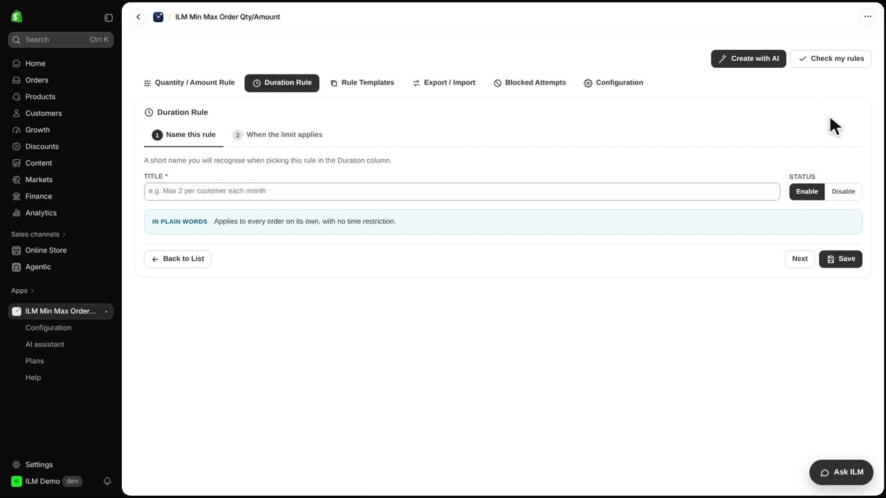
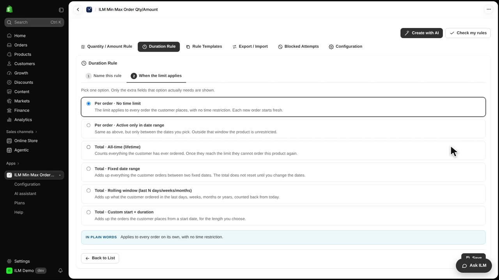
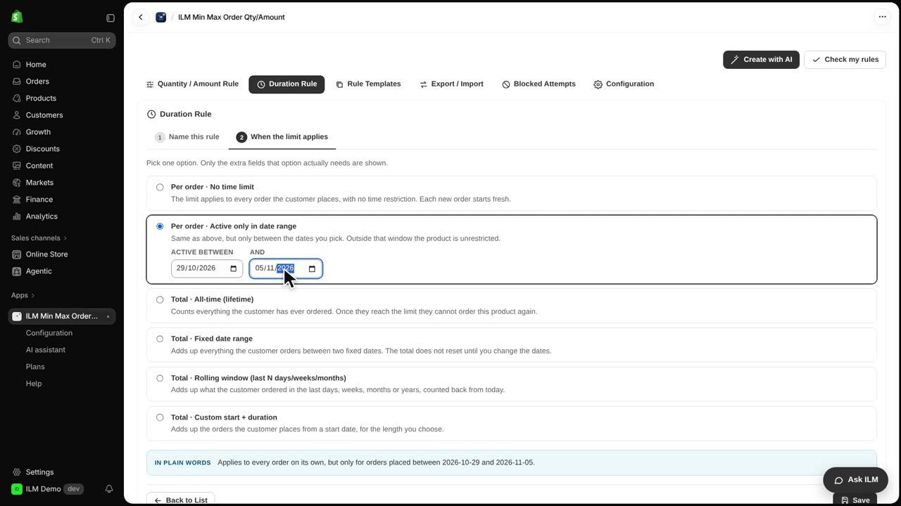
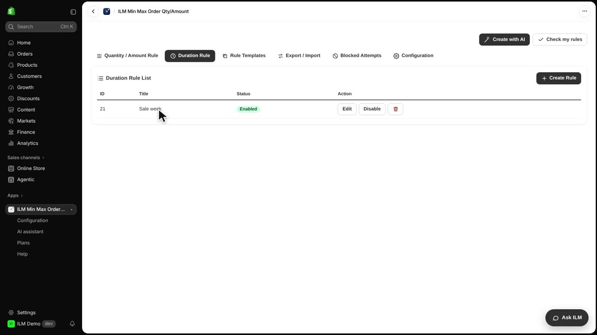
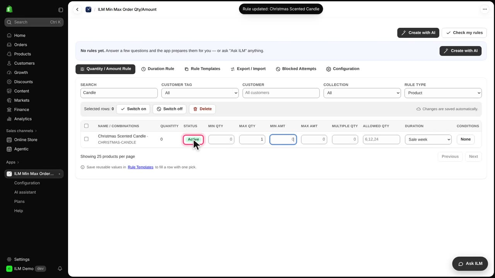
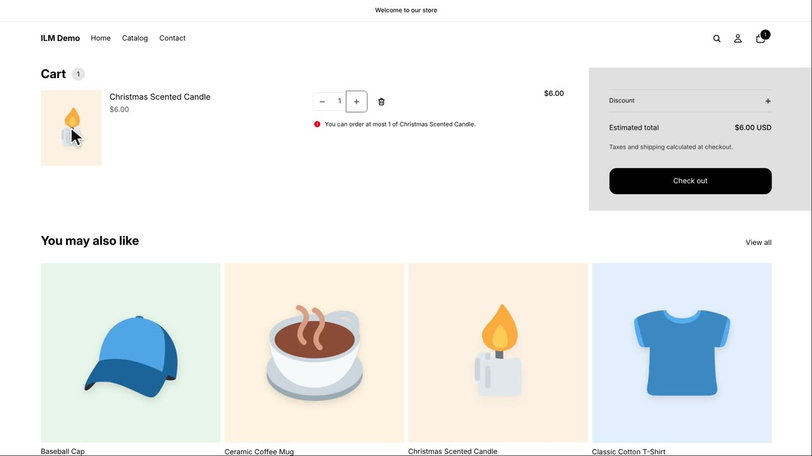

A Duration rule decides when a limit applies. Per order, No time limit is the normal case. In this lesson, a limit is only active during a one-week sale. We will create a Sale week rule and use it to cap the Christmas Scented Candle at one per order during the sale.
Open the Duration Rule tab and click Create Rule. You will see the Duration Rule List grid behind the new rule form.

Give the rule a title, like Sale week, and keep the status on. Then click Next. The title is what you will pick later in the Duration column of a product rule, so make it easy to recognise.

Choose Per order, Active only in date range, and pick the dates: from today, for one week. The first date field is the start and the second is the end. Outside those dates the rule simply does not apply.

In plain words tells you what the rule will do, so read it before saving. Click Save. Back in the rule grid, Sale week now appears in the list and is ready to be attached to a product.

Open the Quantity / Amount Rule tab, search for Candle, and give the Christmas Scented Candle a maximum of one. Then pick Sale week in its Duration column. The badge on the row confirms the rule is linked to that product.

During the sale, two candles are refused in the cart and the shopper sees the limit message. After the last day, the limit stops by itself. Before the first day, the rule shows as Scheduled.
